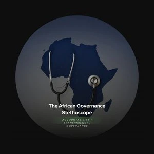

Skip to content

The African Governance
Stethoscope
.
The Reading Room
Anti-Corruption
African Renaissance
Impact
Partner with us
↗
Share this perspective.
×
Copy a link to this page.
Page link
Copy link
↗
Enable JavaScript to explore the publication, or
contact the editorial team
.